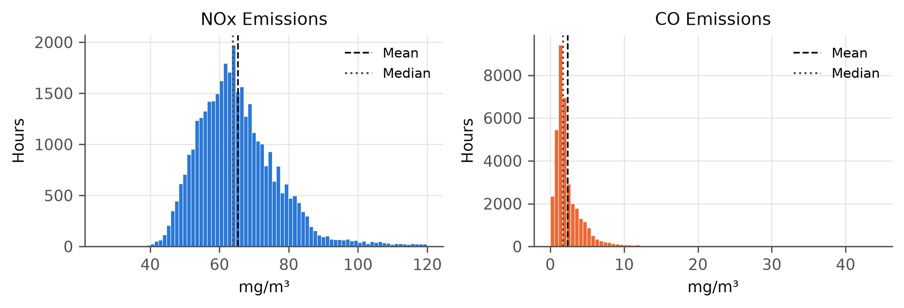
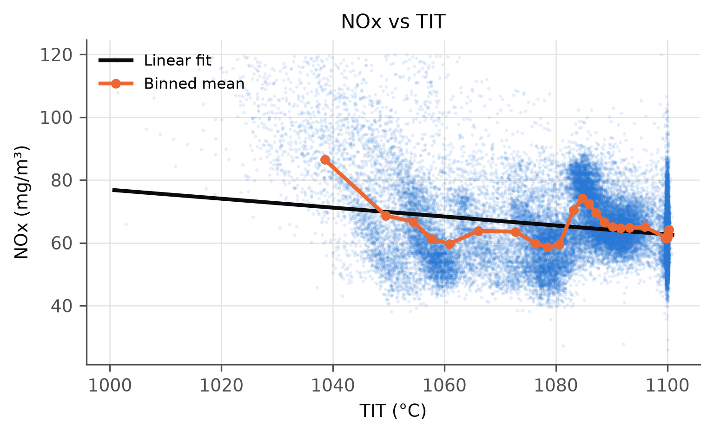
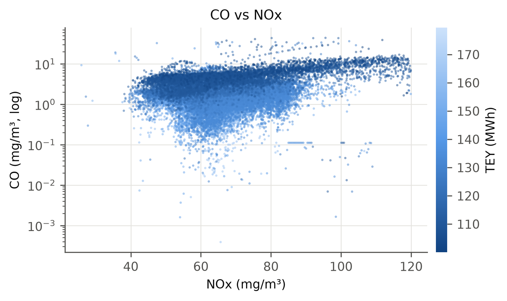
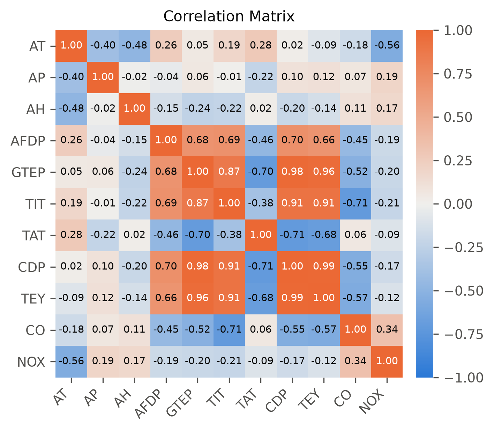
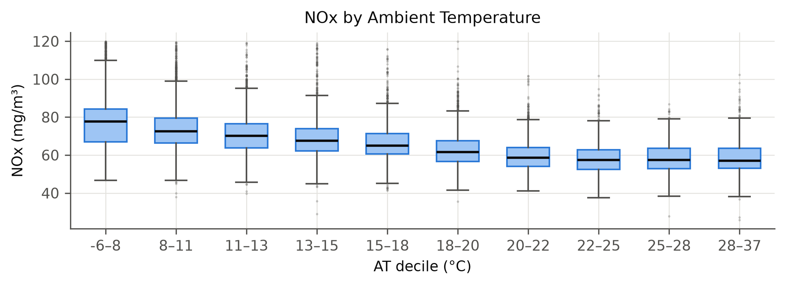
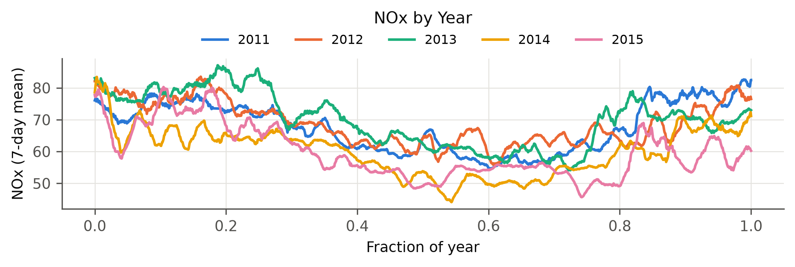

ADSP 31014 Statistical Models for Data Science
Course Project Part 1 — Gas Turbine CO and NOx Emissions
The data set contains 36,733 hourly records from a natural-gas-fired gas turbine at a combined-cycle power plant in north-western Turkey, covering 2011–2015. It was obtained from the UCI Machine Learning Repository (Gas Turbine CO and NOx Emission Data Set; Kaya, Tüfekci & Uzun, 2019), where it was published as a benchmark for predictive emission monitoring systems (PEMS). Each record is the hourly average of 11 sensor signals: 3 ambient conditions, 6 process measurements around the compressor, combustor and turbine, the turbine energy yield, and 2 regulated flue-gas emissions, carbon monoxide (CO) and nitrogen oxides (NOx). The data come as five annual files with no timestamps; rows within each file are in chronological order, per the source.

The cleaned data set has 36,624 rows and 13 columns: the 11 sensor signals plus year and row_in_year, both added during wrangling. Each row is one operating hour. All sensor columns are continuous decimals with no missing values; units follow the UCI documentation. Statistics below are for the cleaned data.
| Column Name | Description | Data Type | Example Value | Notes |
|---|---|---|---|---|
| AT | Ambient temperature (°C) | decimal | 4.588 |
|
| AP | Ambient pressure (mbar) | decimal | 1018.7 |
|
| AH | Ambient relative humidity (%) | decimal | 83.675 |
|
| AFDP | Air filter differential pressure (mbar) | decimal | 3.576 |
|
| GTEP | Gas turbine exhaust pressure (mbar) | decimal | 23.979 |
|
| TIT | Turbine inlet temperature (°C) | decimal | 1086.2 |
|
| TAT | Turbine after (exhaust) temperature (°C) | decimal | 549.83 |
|
| CDP | Compressor discharge pressure (mbar) | decimal | 11.898 |
|
| TEY | Turbine energy yield (MWh) | decimal | 134.67 |
|
| CO | Carbon monoxide (mg/m³) | decimal | 0.327 |
|
| NOX | Nitrogen oxides (mg/m³) | decimal | 81.952 |
|
| year | Source file year (added) | integer | 2011 |
|
| row_in_year | Row position in annual file (added) | integer | 0 |
|
The five annual files were concatenated and tagged with year and row_in_year. No column had missing values. Two data-quality problems were found, and the affected rows were removed:
Boundary values were kept: relative humidity slightly above 100 % (sensor saturation), TIT and TAT at their control ceilings, and CO readings up to 44 mg/m³. These reflect sensor limits or real operating states rather than data-entry errors. The cleaned data set has 36,624 rows.
Emission distributions (Figure 1). NOx is unimodal and centred at 60–65 mg/m³, with a right tail: the 99th percentile is 105 and the maximum 120. CO is far more skewed: its median is only 1.72 mg/m³, yet 1 % of hours exceed 11 mg/m³.


NOx vs TIT (Figure 2). Combustion theory predicts that NOx rises with firing temperature, but the pooled data show the opposite on average: the linear fit has a slope of −0.14 mg/m³ per °C and explains only 4.6 % of the variance. Hours below 1050 °C (6.3 % of the data, mostly part load) average 80.5 mg/m³ of NOx, against 64.3 above. NOx is fairly flat near 60 between about 1055 and 1080 °C, then jumps to 70–74 in a distinct cluster at 1083–1087 °C, the base-load operating point. The relationship is clearly non-linear and depends on load.
CO vs NOx (Figure 3). Theory predicts a trade-off between the two pollutants: hotter, more complete combustion lowers CO but raises NOx. The CO side holds: CO falls sharply as firing temperature rises (r = −0.71 with TIT), from a mean of 6.2 mg/m³ below 110 MWh to 1.2 mg/m³ above 160 MWh. The NOx side does not appear as a simple inverse relationship. At part load the turbine emits more of both pollutants (overall r = +0.34).

Correlation structure (Figure 4). The process variables form one tightly correlated block that describes turbine load: CDP–TEY r = 0.99, GTEP–CDP 0.98, GTEP–TEY 0.96 and TIT–TEY 0.91. This indicates severe multicollinearity among the load variables. TAT is negatively related to that block because exhaust temperature is held at its control limit as load increases. Ambient temperature is the strongest single correlate of NOx (r = −0.56), while every load-related variable has only a weak marginal correlation with NOx (|r| ≤ 0.21).
Ambient temperature (Figure 5). Median NOx falls steadily from 77.6 mg/m³ in the coldest decile (below 7.9 °C) to 57.3 at 22.5–24.9 °C, then levels off near 57 in the three warmest deciles. The relationship holds in every year, with within-year correlations of r = −0.57 to −0.67.

